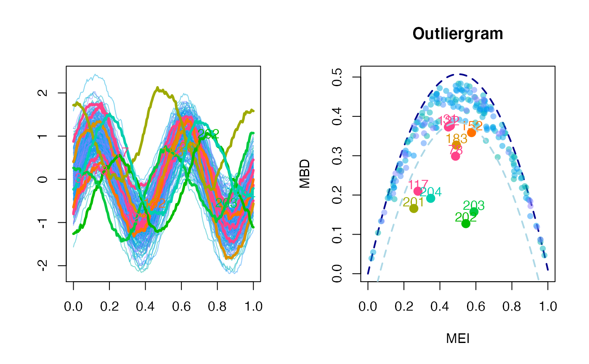
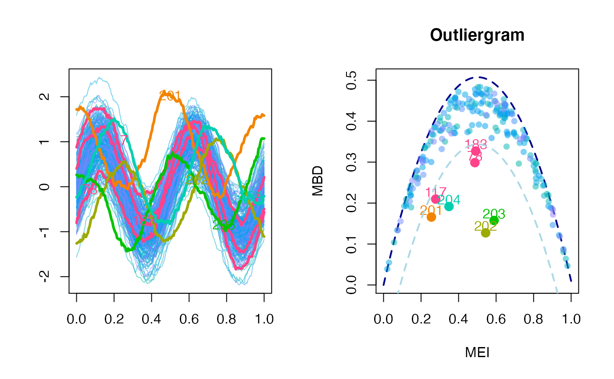

This function performs the outliergram of a univariate functional dataset, possibly with an adjustment of the true positive rate of outliers discovered under assumption of gaussianity.
outliergram( fData, MBD_data = NULL, MEI_data = NULL, p_check = 0.05, Fvalue = 1.5, adjust = FALSE, display = TRUE, xlab = NULL, ylab = NULL, main = NULL, ... )
| fData | the univariate functional dataset whose outliergram has to be determined. |
|---|---|
| MBD_data | a vector containing the MBD for each element of the dataset. If missing, MBDs are computed. |
| MEI_data | a vector containing the MEI for each element of the dataset. If not not provided, MEIs are computed. |
| p_check | percentage of observations with either low or high MEI to be checked for outliers in the secondary step (shift towards the center of the dataset). |
| Fvalue | the \(F\) value to be used in the procedure that finds the
shape outliers by looking at the lower parabolic limit in the outliergram.
Default is |
| adjust | either
|
| display | either a logical value indicating whether you want the outliergram to be displayed, or the number of the graphical device where you want the outliergram to be displayed. |
| xlab | a list of two labels to use on the x axis when displaying the functional dataset and the outliergram |
| ylab | a list of two labels to use on the y axis when displaying the functional dataset and the outliergram; |
| main | a list of two titles to be used on the plot of the functional dataset and the outliergram; |
| ... | additional graphical parameters to be used only in the plot of the functional dataset |
Even when used graphically to plot the outliergram, the function returns a list containing:
Fvalue: the value of the parameter F used;
d: the vector of values of the parameter \(d\) for each observation
(distance to the parabolic border of the outliergram);
ID_outliers: the vector of observations id corresponding to outliers.
When the adjustment option is selected, the value of \(F\) is optimized for
the univariate functional dataset provided with fData. In practice,
a number adjust$N_trials of times a synthetic population
(of size adjust$trial_size with the same covariance (robustly
estimated from data) and centerline as fData is simulated without
outliers and each time an optimized value \(F_i\) is computed so that a
given proportion (adjust$TPR) of observations is flagged as outliers.
The final value of F for the outliergram is determined as an average
of \(F_1, F_2, \ldots, F_{N_{trials}}\). At each time step the optimization
problem is solved using stats::uniroot (Brent's method).
Arribas-Gil, A., and Romo, J. (2014). Shape outlier detection and visualization for functional data: the outliergram, Biostatistics, 15(4), 603-619.
set.seed( 1618 ) N = 200 P = 200 N_extra = 4 grid = seq( 0, 1, length.out = P ) Cov = exp_cov_function( grid, alpha = 0.2, beta = 0.8 ) Data = generate_gauss_fdata( N, centerline = sin( 4 * pi * grid ), Cov = Cov ) Data_extra = array( 0, dim = c( N_extra, P ) ) Data_extra[ 1, ] = generate_gauss_fdata( 1, sin( 4 * pi * grid + pi / 2 ), Cov = Cov ) Data_extra[ 2, ] = generate_gauss_fdata( 1, sin( 4 * pi * grid - pi / 2 ), Cov = Cov ) Data_extra[ 3, ] = generate_gauss_fdata( 1, sin( 4 * pi * grid + pi/ 3 ), Cov = Cov ) Data_extra[ 4, ] = generate_gauss_fdata( 1, sin( 4 * pi * grid - pi / 3), Cov = Cov ) Data = rbind( Data, Data_extra ) fD = fData( grid, Data ) outliergram( fD, display = TRUE )#> $Fvalue #> [1] 1.5 #> #> $d #> [1] 0.0176114544 0.0435426917 0.0412298416 0.0514984256 0.0077678825 #> [6] 0.1050423923 0.1148547172 0.0209557568 0.0256050951 0.0502039976 #> [11] 0.0756444690 0.0957069255 0.0955864955 0.0242157817 0.0586735137 #> [16] 0.0521609727 0.0385210808 0.0291574616 0.0033550662 0.0249060707 #> [21] 0.0027138800 0.0110386313 0.0369225104 0.0235194135 0.0663697672 #> [26] 0.0122081027 0.0323289373 0.0047425867 0.1221622911 0.0127359690 #> [31] 0.1273363747 0.0640854716 0.0130654689 0.0896622609 0.0008577115 #> [36] 0.0121720226 0.0571897952 0.0082277782 0.0199523037 0.0144423404 #> [41] 0.0151378151 0.0468399449 0.0157327152 0.0008372018 0.0157999807 #> [46] 0.0152336328 0.0385340372 0.0173677388 0.0503822068 0.0643135130 #> [51] 0.0029821682 0.0830116379 0.0294097122 0.0154149715 0.0059378622 #> [56] 0.0265120207 0.0190215397 0.1096481165 0.0582267169 0.0105365401 #> [61] 0.0529575534 0.0302322890 0.0379700075 0.0143013124 0.0608756290 #> [66] 0.0568058099 0.0438073940 0.0378637001 0.0278497525 0.0695197902 #> [71] 0.0185139271 0.1072170856 0.0321988300 0.0481022397 0.0395259526 #> [76] 0.0729589249 0.0201002560 0.2081087306 0.0137075908 0.0540464491 #> [81] 0.0141294492 0.0598529702 0.0002333611 0.0454489713 0.0212358302 #> [86] 0.0150530655 0.0247384224 0.0347266493 0.0594439667 0.0610557314 #> [91] 0.0871014730 0.0028619675 0.0029285895 0.0653213936 0.0235917125 #> [96] 0.0225797547 0.0709666172 0.0589656609 0.0399139271 0.0332606865 #> [101] 0.0596849995 0.0927871148 0.0334329711 0.0531944895 0.0621790483 #> [106] 0.0251286475 0.0374558051 0.0189191539 0.0584951596 0.0622928994 #> [111] 0.0908447201 0.0634798802 0.0088101565 0.1152498201 0.0248140623 #> [116] 0.1155564559 0.1963871148 0.0298872742 0.0373160243 0.0209620098 #> [121] 0.0437059596 0.1281782466 0.0849571030 0.0205120243 0.0633598184 #> [126] 0.0499718427 0.1043016505 0.0235167572 0.0209989556 0.0084202345 #> [131] 0.0290659603 0.0223782430 0.0616137726 0.0816347146 0.0271277299 #> [136] 0.1160831402 0.0514680177 0.0240108845 0.0393020272 0.0386456088 #> [141] 0.0690514815 0.0312561564 0.0398580122 0.0828859159 0.0406998829 #> [146] 0.0582855211 0.0458848148 0.0228874674 0.0871308691 0.0260329325 #> [151] 0.0832803584 0.1377272180 0.0578802811 0.0421784797 0.0166601903 #> [156] 0.0400398327 0.0351458708 0.0212783239 0.0488423211 0.0551136856 #> [161] 0.0310677473 0.0408971784 0.0293353569 0.0689828021 0.1011523218 #> [166] 0.0520131834 0.0631049503 0.0197210422 0.0300590360 0.0302012448 #> [171] 0.0220787103 0.0388785666 0.0213618939 0.0689322890 0.0453167186 #> [176] 0.0244730561 0.0422584939 0.0420099247 0.0774596240 0.0068152420 #> [181] 0.0112290822 0.0553901659 0.1800951113 0.0124814064 0.0392902492 #> [186] 0.0044056686 0.0880005602 0.0088245871 0.0463041039 0.0346741416 #> [191] 0.0016150379 0.0093634200 0.0007821392 0.0071868045 0.0264287839 #> [196] 0.0436299515 0.0247155788 0.0500915665 0.0978481587 0.0120163769 #> [201] 0.2184629757 0.3764946924 0.3347489423 0.2682646467 #> #> $ID_outliers #> [1] 31 78 117 122 152 183 201 202 203 204 #>#> $Fvalue #> [1] 2.5 #> #> $d #> [1] 0.0176114544 0.0435426917 0.0412298416 0.0514984256 0.0077678825 #> [6] 0.1050423923 0.1148547172 0.0209557568 0.0256050951 0.0502039976 #> [11] 0.0756444690 0.0957069255 0.0955864955 0.0242157817 0.0586735137 #> [16] 0.0521609727 0.0385210808 0.0291574616 0.0033550662 0.0249060707 #> [21] 0.0027138800 0.0110386313 0.0369225104 0.0235194135 0.0663697672 #> [26] 0.0122081027 0.0323289373 0.0047425867 0.1221622911 0.0127359690 #> [31] 0.1273363747 0.0640854716 0.0130654689 0.0896622609 0.0008577115 #> [36] 0.0121720226 0.0571897952 0.0082277782 0.0199523037 0.0144423404 #> [41] 0.0151378151 0.0468399449 0.0157327152 0.0008372018 0.0157999807 #> [46] 0.0152336328 0.0385340372 0.0173677388 0.0503822068 0.0643135130 #> [51] 0.0029821682 0.0830116379 0.0294097122 0.0154149715 0.0059378622 #> [56] 0.0265120207 0.0190215397 0.1096481165 0.0582267169 0.0105365401 #> [61] 0.0529575534 0.0302322890 0.0379700075 0.0143013124 0.0608756290 #> [66] 0.0568058099 0.0438073940 0.0378637001 0.0278497525 0.0695197902 #> [71] 0.0185139271 0.1072170856 0.0321988300 0.0481022397 0.0395259526 #> [76] 0.0729589249 0.0201002560 0.2081087306 0.0137075908 0.0540464491 #> [81] 0.0141294492 0.0598529702 0.0002333611 0.0454489713 0.0212358302 #> [86] 0.0150530655 0.0247384224 0.0347266493 0.0594439667 0.0610557314 #> [91] 0.0871014730 0.0028619675 0.0029285895 0.0653213936 0.0235917125 #> [96] 0.0225797547 0.0709666172 0.0589656609 0.0399139271 0.0332606865 #> [101] 0.0596849995 0.0927871148 0.0334329711 0.0531944895 0.0621790483 #> [106] 0.0251286475 0.0374558051 0.0189191539 0.0584951596 0.0622928994 #> [111] 0.0908447201 0.0634798802 0.0088101565 0.1152498201 0.0248140623 #> [116] 0.1155564559 0.1963871148 0.0298872742 0.0373160243 0.0209620098 #> [121] 0.0437059596 0.1281782466 0.0849571030 0.0205120243 0.0633598184 #> [126] 0.0499718427 0.1043016505 0.0235167572 0.0209989556 0.0084202345 #> [131] 0.0290659603 0.0223782430 0.0616137726 0.0816347146 0.0271277299 #> [136] 0.1160831402 0.0514680177 0.0240108845 0.0393020272 0.0386456088 #> [141] 0.0690514815 0.0312561564 0.0398580122 0.0828859159 0.0406998829 #> [146] 0.0582855211 0.0458848148 0.0228874674 0.0871308691 0.0260329325 #> [151] 0.0832803584 0.1377272180 0.0578802811 0.0421784797 0.0166601903 #> [156] 0.0400398327 0.0351458708 0.0212783239 0.0488423211 0.0551136856 #> [161] 0.0310677473 0.0408971784 0.0293353569 0.0689828021 0.1011523218 #> [166] 0.0520131834 0.0631049503 0.0197210422 0.0300590360 0.0302012448 #> [171] 0.0220787103 0.0388785666 0.0213618939 0.0689322890 0.0453167186 #> [176] 0.0244730561 0.0422584939 0.0420099247 0.0774596240 0.0068152420 #> [181] 0.0112290822 0.0553901659 0.1800951113 0.0124814064 0.0392902492 #> [186] 0.0044056686 0.0880005602 0.0088245871 0.0463041039 0.0346741416 #> [191] 0.0016150379 0.0093634200 0.0007821392 0.0071868045 0.0264287839 #> [196] 0.0436299515 0.0247155788 0.0500915665 0.0978481587 0.0120163769 #> [201] 0.2184629757 0.3764946924 0.3347489423 0.2682646467 #> #> $ID_outliers #> [1] 78 117 183 201 202 203 204 #>if (FALSE) { outliergram( fD, adjust = list( N_trials = 10, trial_size = 5 * nrow( Data ), TPR = 0.01, VERBOSE = FALSE ), display = TRUE ) }